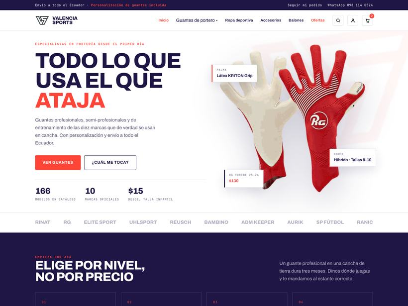
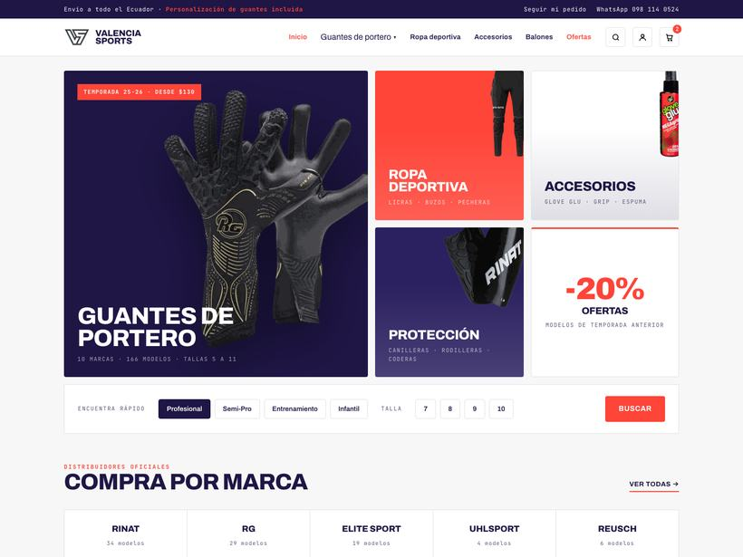
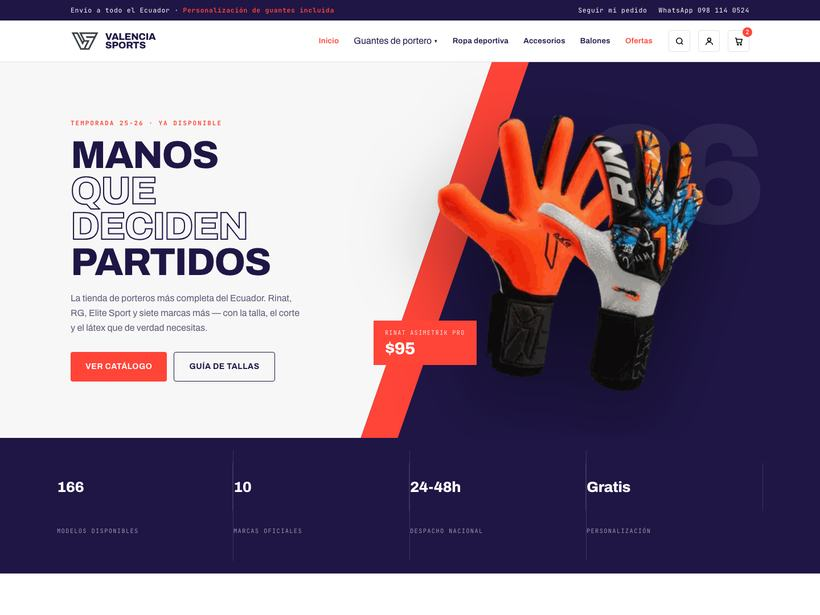
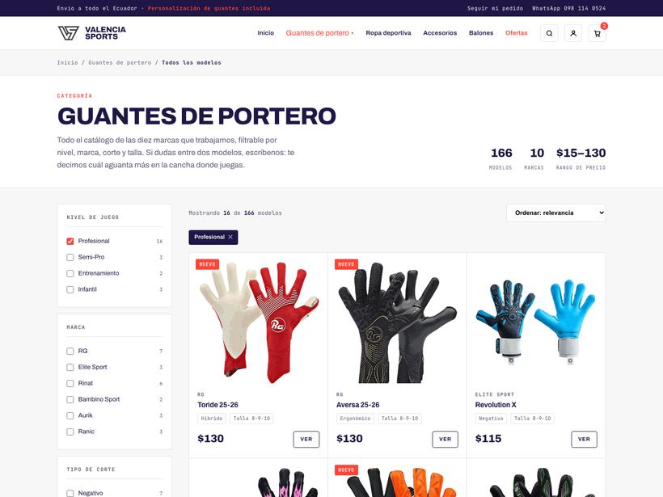
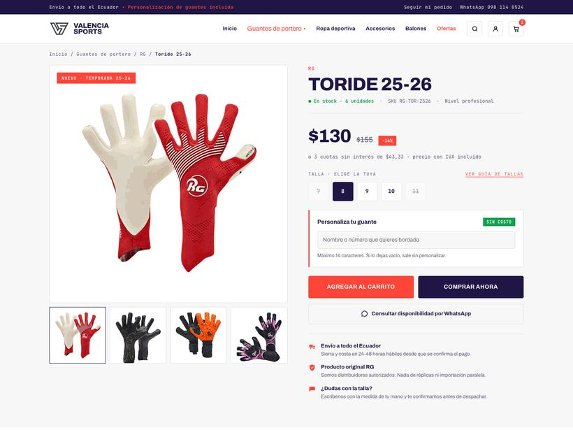

Borrador de diseño · Agosto 2026
Las tres usan la misma paleta, el mismo logo y el mismo menú que definiste. Lo que cambia es cómo se ordena la página de inicio y qué se le pide al visitante que haga primero. El catálogo y la ficha de producto son iguales para las tres.
Abre las tres y quédate con una — o dime qué te gusta de cada una y armamos una cuarta mezclando. Todo lo que ves es navegable: los filtros del catálogo funcionan de verdad, las pestañas de la ficha cambian, y el menú de marcas se despliega. Las fotos de guantes salieron de tu propio catálogo en PDF.
Página de inicio



Iguales para las tres opciones


El borrador usa las fotos del catálogo en PDF, que sirven perfecto para mostrar la idea pero se quedan cortas para la tienda real. Con esto se termina de armar:
Fondo blanco o transparente, mismo encuadre para todos. Con celular y buena luz alcanza. Son las que más venden y hoy es lo único que falta.
Los precios que ves salieron del catálogo. Hay que confirmar cuáles siguen vigentes y qué tallas hay de cada modelo antes de publicar.
Para la sección de confianza. A la gente que compra por internet en Ecuador le importa ver que hay alguien real detrás.